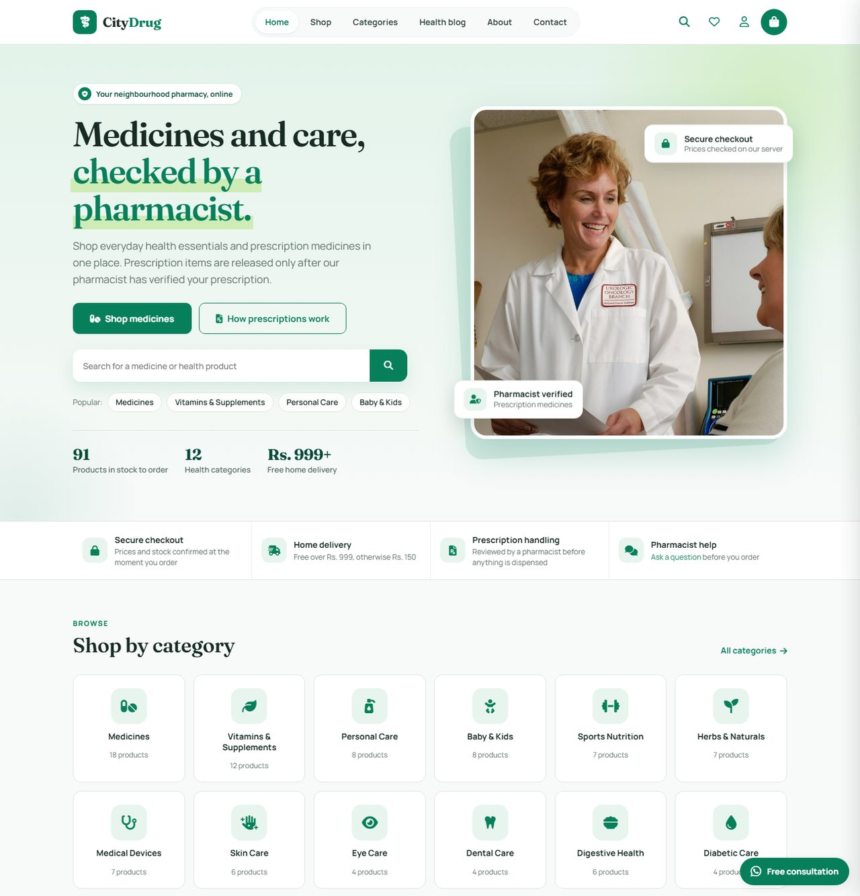
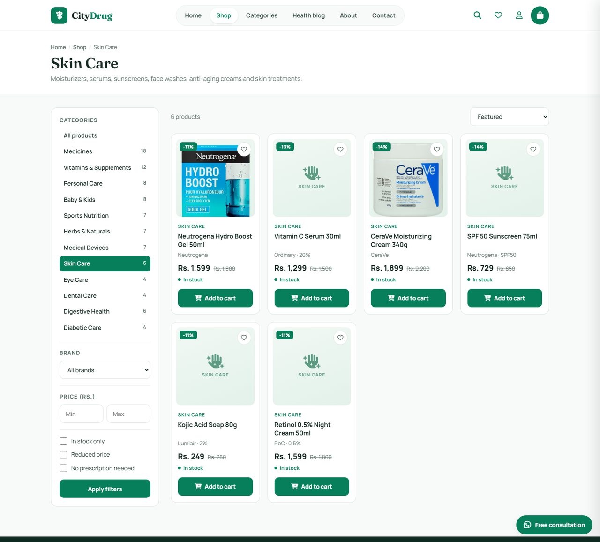
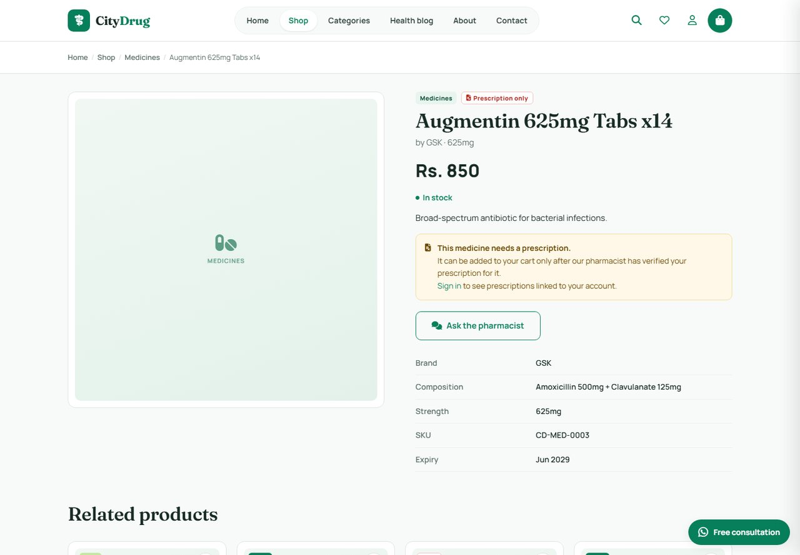
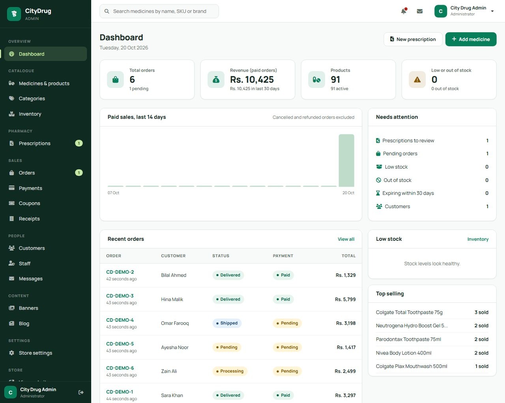
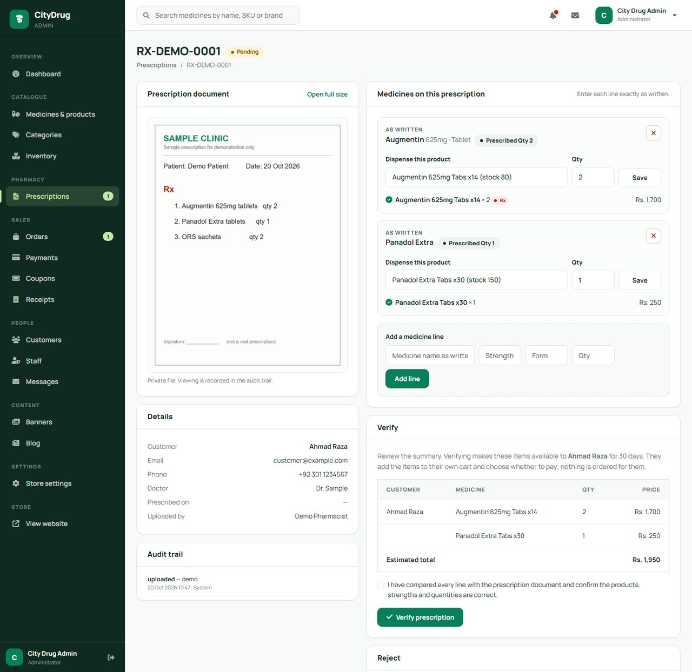
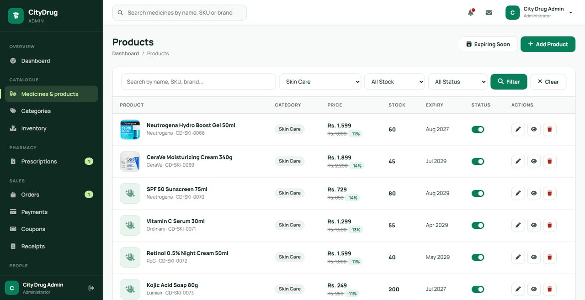
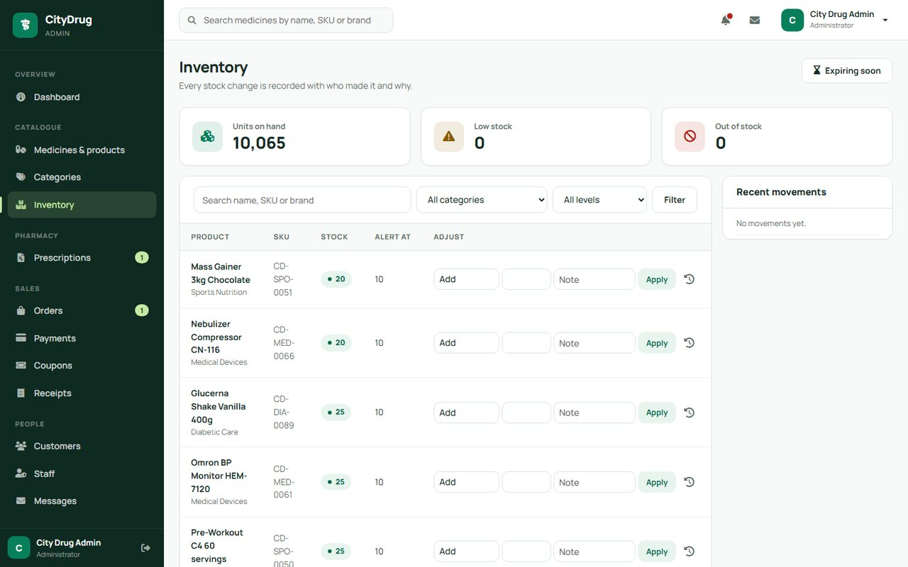
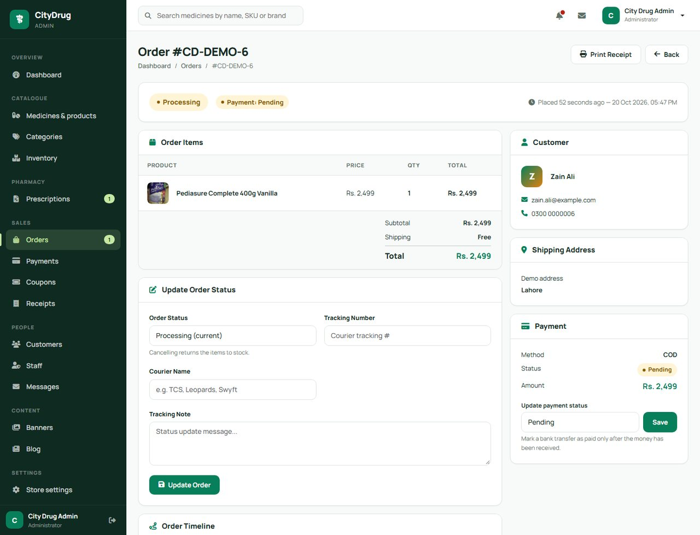
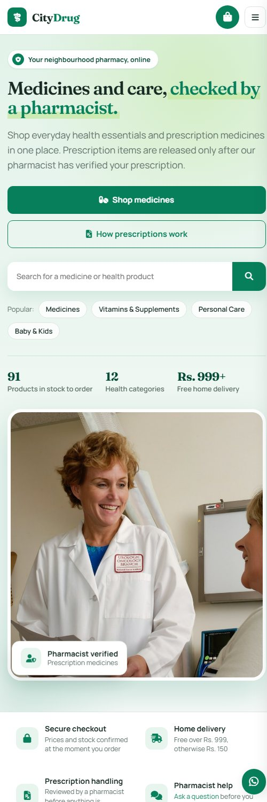

An online pharmacy where prescriptions are verified before anything is dispensed.
A complete storefront and admin back office: catalogue and stock, orders, coupons, and a pharmacist review workflow for prescription-only medicines.

Built around safe dispensing
What the platform does for customers and for the pharmacy team.
Prescription verification
Staff upload a prescription for a specific customer, match each line to a product, and a pharmacist verifies it. Only then can the customer add those medicines, up to the approved quantity.
Server-trusted checkout
The browser never sets a price. Totals, stock, coupons and prescription limits are recalculated from the database in a transaction.
Auditable inventory
Every stock change is logged with who, why and the new balance. Row locks prevent overselling; cancelling an order returns stock.
Storefront
Search, category / brand / price filters, product pages, cart drawer, coupons, guest or account checkout and Google sign-in.
Admin dashboard
Real figures for orders, paid revenue, low stock and top sellers, plus products, categories, coupons, customers and a messages inbox.
Roles & privacy
Customers, pharmacists, administrators and super administrators. Prescription files live on a private disk with an audit trail.
A look around
Fictional demo data. Product photos for a few items are from Open Beauty / Food Facts contributors (CC BY-SA).








From upload to cart
- Pick the customer, upload the prescription. JPG, PNG or PDF, stored privately.
- Enter the medicines as written. Optional OCR can pre-fill them as unverified suggestions.
- Match each line to a product. Suggestions show how confident the match is; nothing is auto-selected.
- A pharmacist verifies (or rejects with a reason). Every step is written to an audit trail.
- The customer reviews and orders. Verified items go to their own cart; nothing is ordered or charged automatically.
What it is built with
Get it running locally
GitHub Pages only hosts this showcase; the application itself needs PHP and MySQL.
git clone https://github.com/Usman552/pharmacy-management-system.git cd pharmacy-management-system composer install cp .env.example .env php artisan key:generate # set DB_DATABASE / DB_USERNAME / DB_PASSWORD in .env, then: php artisan migrate --seed php artisan serve --port=8090
Open http://127.0.0.1:8090. Admin panel: /admin.
| Role | Password (demo) | |
|---|---|---|
| Administrator | admin@citydrug.pk | admin123 |
| Pharmacist | pharmacist@citydrug.pk | pharmacist123 |
| Customer | customer@example.com | password |
Demo credentials for local use only. Change them before any real deployment.